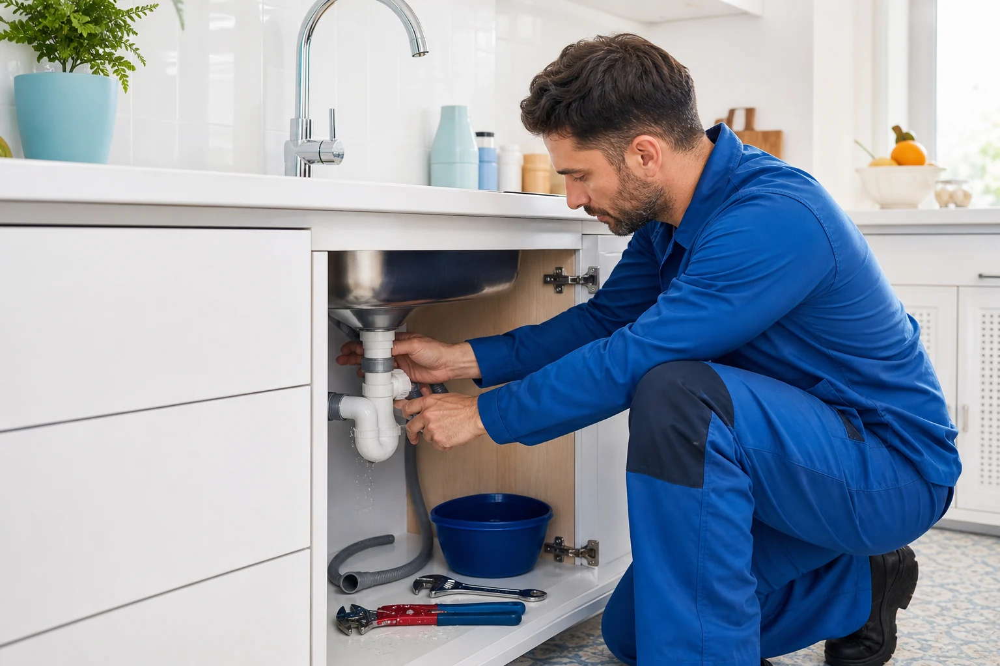

La ayuda que necesitas
Llamar por una urgencia →
Urgencias de fontanería
¿Una fuga, una avería o te has quedado sin agua? Llama a Pedro y te atenderá lo antes posible.
Fontanero de confianza en Catarroja
Pedro viene rápido, te habla claro y te ofrece un buen precio. La tranquilidad de llamar a alguien cercano cuando más lo necesitas.
G 5,0 ★★★★★ 19 reseñas en GoogleEn casa y en tu negocio
Desde una pequeña fuga hasta una instalación completa. Pedro encuentra el problema, te explica la solución y se pone manos a la obra.
¿Una fuga, una avería o te has quedado sin agua? Llama a Pedro y te atenderá lo antes posible.
Localización y reparación eficaz para que el agua deje de ser un problema.
Instalación y sustitución para volver a tener agua caliente con seguridad.
Montaje, cambio y reparación de grifos, cisternas, lavabos e inodoros.
Solución para tuberías, fregaderos y desagües que no tragan como deberían.
Renovación de las instalaciones de agua con un trabajo limpio y cuidado.
Nuevos puntos de agua, tuberías y conexiones para viviendas y locales.

Un profesional cercano
Un fontanero de confianza, sin rodeos: viene rápido, trabaja con seriedad y busca una solución a buen precio.
Especialmente importante cuando hay una fuga, una avería o te quedas sin agua.
Una solución justa, explicada con claridad y sin complicaciones innecesarias.
Trabajo responsable, limpio y bien hecho para que puedas quedarte tranquilo.
Te escucha, entiende el problema y te atiende como a un vecino.
Lo dicen sus clientes
Tuve una urgencia, me quedé sin agua. Llamé a Pedro y vino enseguida. Me solucionó el problema rápido y con profesionalidad.
Gran profesional, buenos precios y muy amable.
Excelentes profesionales, serios y responsables.
Contacto
Cuéntaselo a Pedro y busca una solución rápida, cercana y a buen precio.
Llama ahora664 53 52 20